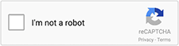
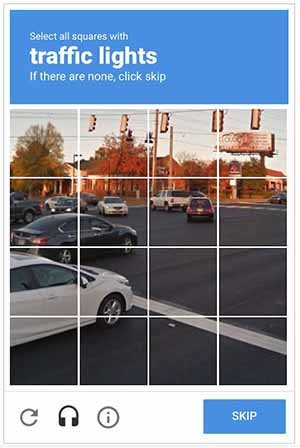

Security is an essential part of responsible digital. It is not uncommon to wonder how to protect your site, especially when you allow the possibility of sending content from your website: form (in particular contact), comments, etc. We know that a good part of the activity on the web is not due to humans (How much of the internet is fake?). Nobody wants to undergo an injection or other malicious act via their website.
At the end of the 90s, a miracle solution appeared in the form of CAPTCHA. Today, we find this component almost everywhere. You may need to copy difficult-to-read characters, click on photos with different elements, or click on a box to confirm that you are not a robot.
But what about its environmental impact? How to reconcile it with digital sobriety? That’s what we’re going to see here!


Looking for the best solution
The CAPTCHA meets the need to secure the data submitted by Internet users on your site.
The problem is that this way of doing things, among others with reCAPTCHA, is often laborious for users. Additionally, the user journey is longer, which increases the environmental impact of digital services when it does not result in abandonment altogether. Especially for users with disabilities who may find it impossible to complete the task. Not to mention the additional requests (CSS, JS and other iframes) necessary to integrate this type of component into a page.
Thus (and this is an essential point of responsible digital), the search for the soberest CAPTCHA takes accessibility into account first.
The accessibility of CAPTCHAs is a recurring problem, and there are many solutions. The main watchword here is not to use CAPTCHAs. Thus, form security should no longer be the responsibility of users. The subject has been previously discussed, among others at Orange.
There are several possibilities:
- Identify the entry time to exclude entries that are too fast
- Use a filter (regular expression or other) to identify suspicious responses
- Randomly add a question that a bot will not necessarily be able to answer (“Which animal is barking?”, “How much is one plus one?”, “How many d’s in pudding?”, etc.). By leaving the possibility of refreshing the question in case of difficulty for the user.
- The honeypot (to which we will return)
In the end, it is the honeypot solution that seems the most adequate in most cases. Detailed elsewhere on a Canadian government site, it consists of adding a hidden field in the form concerned. This field should be set to be filled out only by bots. It does this by hiding it from users and assistive technologies while giving bots code elements that make them think it’s a required field. This means that when validating the form, responses with this field filled in should not be taken into account. While the honeypot requires some thought for flawless implementation, it remains very light and elegant because it keeps the focus on the original goal: to prevent bots from sending data through a digital service. Rather than impacting the user to ensure that he is not a robot, we leave the user journey intact to focus on bot detection.
Conclusion
The example of CAPTCHA proves to be representative of a responsible digital approach. In order to improve the security of a digital service, we are first interested in the accessibility of possible solutions (the free and widely used solution not being here again necessarily the best) to finally ensure via digital sobriety that the chosen solution does not degrade the environmental impact of the service.
Resources to go further